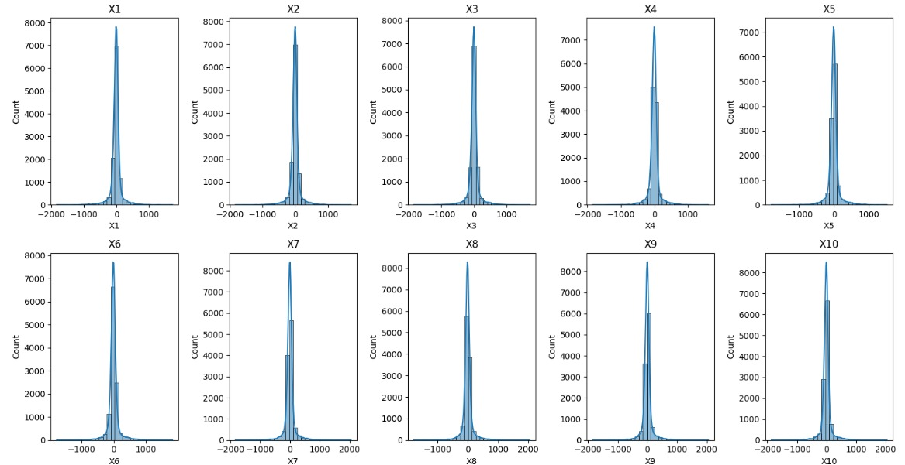
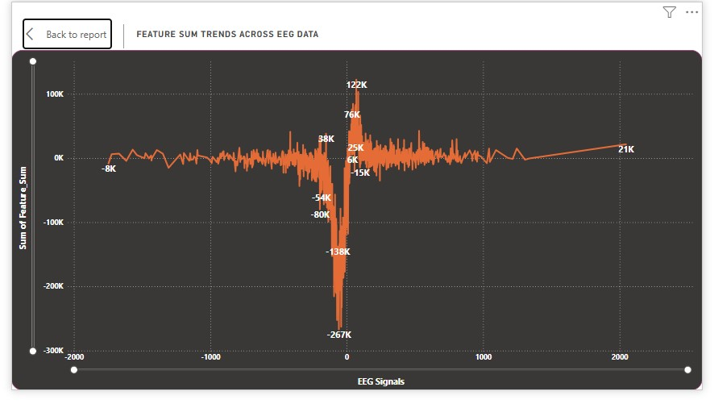
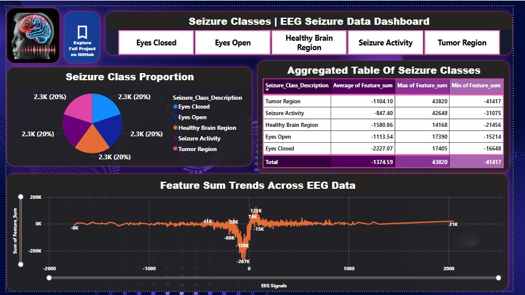

Sphinx Document¶
{kind=link}
EPILEPTIC SEIZURE DETECTION¶
Epileptic seizures come about due to episodic and peculiar bursts of electrical activity in the brain affected by diverse types of physical and cognitive disability. Properly diagnosing and predicting seizures is, therefore, imperative for timely medical interventions to provide better quality of life to the patients. The different views of seizure detection in epilepsy using ML and DL models on EEG signal processing, feature extraction techniques and the use of different classification techniques like SVM, RF and also CNN. It addresses the different aspects of Long Short Term Memory networks used for seizure prediction online. It contrasts performance measures of the model based on values of estimation: accuracy, sensitivity, specificity, etc. This work would thus serve as a reference to the development and research efforts in the biomedical engineering domain while being a compilation of information that is greatly helpful towards the automated seizure detection paradigm in real-time and clinical environments
Epileptic Seizure Dataset Preparation¶
Overview¶
The Epileptic Seizure Recognition dataset comprises EEG signals used for detecting epileptic seizures. The dataset includes time-series features representing brain wave activity, with the target variable indicating seizure occurrence.
Dataset Description¶
Total Features: 178 numerical EEG signal features.
Target Variable (`y`): Classifies different brain states:
1 → Seizure activity
2 → EEG recorded from a tumor-affected brain region
3 → EEG from a healthy brain region
4 → EEG recorded with eyes closed
5 → EEG recorded with eyes open
{kind=link}
Data Cleaning & Preprocessing¶
Handling Missing Values:
No missing values were found in the dataset.
Removing Unused Data:
The first column (Unnamed) contained irrelevant data and was removed.
Feature Scaling:
All EEG features were standardized for better model performance.
Renaming Columns:
The classification column (y) was renamed to “Seizure_Class(Code)” for clarity.
Creating New Features:
“Feature Sum” was computed and added using Power BI Query Editor.
“Seizure Class Description” was generated using a Power BI DAX formula to provide a textual representation of seizure classes.
This preprocessing ensures high-quality input for machine learning models, enhancing the accuracy of seizure detection systems.
{kind=link}
Formulas Used¶
Power BI Query Editor (To add the “Feature Sum” column):
Feature_Sum = [X1] + [X2] + [X3] + ... + [X178]
Power BI DAX Formula (To add the “Seizure Class Description” column):
Seizure_Class_Description = SWITCH( TRUE(), [Seizure_class(code)] = 1, "Seizure Activity", [Seizure_class(code)] = 2, "Tumor Region", [Seizure_class(code)] = 3, "Healthy Brain Region", [Seizure_class(code)] = 4, "Eyes Closed", [Seizure_class(code)] = 5, "Eyes Open", "Unknown" )
This section provides an overview of the required dependencies for the project.
Core Dependencies¶
absl-py (2.1.0) - Utility library for Python applications.
alabaster (1.0.0) - Theme for Sphinx documentation.
altair (5.5.0) - Declarative statistical visualization library.
annotated-types (0.7.0) - Type annotations and validation.
anyio (4.8.0) - Asynchronous I/O library.
Machine Learning & AI¶
TensorFlow (2.18.0) - Open-source machine learning framework.
Keras (3.8.0) - High-level neural network API.
scikit-learn (1.6.1) - Machine learning library for Python.
SciPy (1.15.1) - Scientific computing package.
numpy (2.0.2) - Numerical computing library.
Visualization & Data Analysis¶
matplotlib (3.10.0) - Visualization library for plots and graphs.
seaborn (0.13.2) - Statistical data visualization.
pandas (2.2.3) - Data analysis and manipulation tool.
pydeck (0.9.1) - Geospatial visualization library.
streamlit (1.41.1) - Web-based data visualization and application framework.
Web Frameworks & APIs¶
FastAPI (0.115.7) - Modern web framework for APIs.
Flask (3.1.0) - Micro web framework for Python.
Starlette (0.45.3) - Lightweight web framework for async APIs.
Uvicorn (0.34.0) - ASGI server for FastAPI and Starlette.
Others¶
protobuf (5.29.3) - Protocol Buffers for serialization.
requests (2.32.3) - HTTP request library.
pytest (8.3.4) - Testing framework.
Werkzeug (3.1.3) - WSGI utilities for Python applications.
Jinja2 (3.1.5) - Template engine for web applications.
Result Analysis¶
The results obtained for using different classifiers for the classification of the epileptic seizure dataset and possibly some changed parameters for a given classifier are presented in this section. One of the challenges faced during the implementation is working with a large dataset with a large number of attributes (features), 178. As presented in the feature extraction (selection section) section, feature reduction can be applied for the close prediction of elliptic seizure cases with some selected features.
{kind=link}
Analysis¶
Logistic Regression
Logistic Regression is a statistical method used for binary and multi-class classification problems. It predicts the probability of an instance belonging to a particular category using a logistic (sigmoid) function.
Training data accuracy evaluation: 66.55%
Test Data Accuracy Evaluation: 64.03%
SVM
Support Vector Machine (SVM) is a powerful supervised learning algorithm used for classification and regression tasks. SVM is widely used for medical diagnosis, image recognition, and text classification.
Training data accuracy evaluation: 98.22%
Test Data Accuracy Evaluation: 64.03%
KNN
K-Nearest Neighbors (KNN) is a simple, non-parametric, and lazy learning algorithm used for classification and regression tasks.
Training data accuracy evaluation: 93.81%
Test Data Accuracy Evaluation: 92.21%
Conclusion¶
The findings support the conclusions that machine learning and deep learning techniques for seizure detection and prediction are powerful and effective tools for managing and improving the quality of treatment for patients with epilepsy. This covers feature extraction, EEG preprocessing, and classification techniques using ML and DL. Subsequent investigation showed that deep learning models—like CNNs and LSTMs—provided a relatively greater level of accuracy than conventional machine learning algorithms in the real-time seizure prediction challenge. Additionally, there are still obstacles in this field, including issues with data quality, computational complexity, and practical application. Future work must focus on improving model generalization, adding a real-time monitoring system, and analyzing gait to interpret predictions. These technologies enable the development of more.
{kind=link}